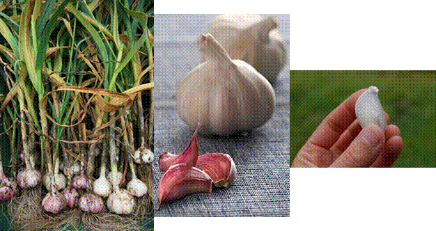
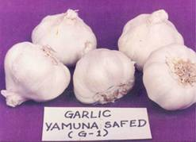
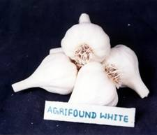
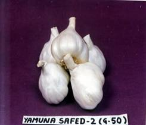
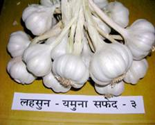
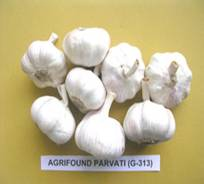
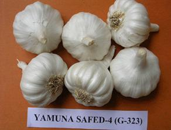
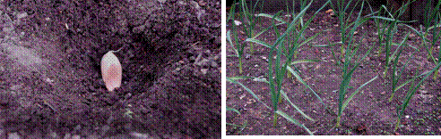

HORT 281 :: Lecture 16 :: ORIGIN, AREA, PRODUCTION, VARIETIES, PACKAGE OF PRACTICES FOR GARLIC

Origin, area, production, varieties, package of practices for GARLIC
Garlic (Allium sativum) is one of the important bulb crops grown and used as a spice or condiment throughout India. It is also important foreign exchange earner for India. It is consumed by almost all people who take onion. Garlic has higher nutritive value than other bulb crops. It is rich in proteins, phosphorous, potassium, calcium, magnesium and carbohydrates. Ascorbic acid content is very high in green garlic.
|  |
Nutritive composition of fresh by peeled garlic cloves and dehydrated garlic powder is as follows:
Nutritive Value of Garlic
Particular |
Fresh peeled garlic cloves |
Dehydrated garlic powder |
Moisture (%) |
62.80 |
5.20 |
Protein (%) |
6.30 |
17.50 |
Fat (%) |
0.10 |
0.60 |
Mineral matter (%) |
1.00 |
3.20 |
Fibre (%) |
0.80 |
1.90 |
Carbohydrates (%) |
29.00 |
71.40 |
Energy K. Cal |
145.00 |
-- |
Calcium (%) |
0.03 |
0.10 |
Phosphorus (%) |
0.30 |
0.42 |
Potassium (%) |
-- |
0.70 |
Magnesium (mg/100 g) |
71.00 |
-- |
Iron (%) |
0.001 |
0.004 |
Niacin (%) |
-- |
0.70 |
Sodium (%) |
-- |
0.01 |
Copper (mg/100 g) |
0.63 |
-- |
Manganese (mg/100 g) |
0.86 |
-- |
Zinc (mg/100 g) |
1.93 |
-- |
Chromium (mg/100 g) |
0.02 |
-- |
Vitamin A (IU) |
0.40 |
175.00 |
Nicotinic acid (mg/100 g) |
0.40 |
-- |
Vitamin C (mg/100 g) |
13.00 |
12.00 |
Vitamin B (mg/100 g) |
16.00 |
0.68 |
Riboflavin B2 (mg/100 g) |
0.23 |
0.08 |
Thiamin (mg/100 g) |
0.06 |
-- |
Healthy garlic bulbs contain allicin, colourless, odourless and water-soluble amino acids. On crushing the garlic bulbs the enzyme allinase breaks down into allin to produce allicin of which the principal ingredient is odoriferous diallyl disulpide. Garlic contains about 0.1% volatile oil. The chief constituents of oil are diallyl disulfide (60% ), diallyl trisulfide ( 20% ), allyl propyl disulfide ( 6% ), a small quantity of diethyl disulfide and probably diallyle polysulfide. Diallyle disulfide possesses the true garlic odour. Garlic has been cultivated for thousands of years. It is the most ancient cultivated vegetables giving pungency of the genus Allium. Original abode of garlic is said to be Central Asia and Southern Europe especially Mediterranean region. Some authorities consider that Allium longicuspis Regael, which is endemic to Central Asia, is the wild ancestor and spread in ancient times to Mediterrenean region. It is known in Egypt in Predynastic times, before 3000BC and also to ancient Greeks and Romans. It has long been grown in India and China. Garlic was carried to the Western hemisphere by the Spanish, Pourtuguese and French. Garlic was not liked by Romans due to strong odour. It was used in England as early as first half of the 16th century. The early domestication of garlic took quite different turn from that of seed propagated leek and onion. Garlic became exclusively vegetatively propagated by cloves or bulbils. Some cultivars are reported to produce flowers but there is no seed setting. Garlic cultivars differ in maturity, bulb size, clove, clove size and number, scale colour, bolting and flowering habits.
Area, Production and Productivity
The production and productivity of garlic in India are very low compared to many other countries. Unawareness of farmers about improved varieties, climate, soil and agro-techniques, diseases and pest damaging the crops and their control measures as well as post-harvest management are though main reasons, inadequate market support is also responsible for limiting the production and productivity indirectly.
VARIETIES
Garlic varieties, Agrifound White, Yamuna Safed, Yamuna Safed 2 and Yamuna Safed 3 have been notified by the Government of India. The varieties developed by NHRDF are given below:
Agrifound White
The variety was notified by Govt. of India in 1989 vide notification no. 28(E) dated 13/4/1989. The variety was developed by mass selection from a local collection obtained from Biharsharif area in Bihar. The bulbs are compact, silvery white with creamy flesh. Bigger elongated cloves with 20-25 in numbers. Diameter 3.5 to 4.5 cm size index 12-15 cm2. The variety is susceptible to purple blotch and stemphylium blight which are common in the northern parts. TSS 41% dry matter 42.78% and good storer. The yield is 130 q/ha. It is recommended for cultivation in the areas where there is not much problem of purple blotch or stemphylium blight in rabi season.
YAMUNA SAFED (G-1)
This variety was notified by Govt. of India in the year 1991 vide notification no.527 (E) dated 16/8/1989. It was developed by mass selection from a local collection obtained from Delhi (Azadpur) market. The bulbs are compact, silvery white skin with creamy flesh. Diameter 4.0 cm to 4.5 cm. Sickle shaped cloves, 25-30 in number, size index of bulb 12-15 cm2, diameter of cloves 0.8 to 1.00 cm. The variety is tolerant to insect pests and diseases like purple blotch, stemphylium blight and onion thrips. TSS 38%, dry matter 39.5% and good storer. Yield 150-175 q/ha. It is recommended for cultivation all over the country.
YAMUNA SAFED-2 (G-50)
The variety was notified by Govt. of India in the year 1996 vide notification no.115 (E) dated 10/2/1996. It was developed by mass selection from a local collection obtained from Karnal area in Haryana. The bulbs are compact attractive white creamy flesh, bulb diameter 3.5-4.0 cm, size index 11-12 cm2,, number of cloves 35-40, diameter 0.75 - 14 cm. Clove size index 1.75-2.5 cm2,, 10 bulb weight 160-240 g, TSS 38-40%, dry matter 40-41%. Average yield 150-200 q/ha. The variety is recommended for Northern India.
YAMUNA SAFED-3 (G-282)
The variety has done very well in Northern parts and also in Central parts of India. It was developed by mass selection technique from a local collection obtained from Dindigul (TN) in 1990. The leaves are wider than other varieties. Bulbs are creamy white and bigger sized (5-6cm dia). Size index 27-29cm2, diameter of cloves 1.2-1.5 cm. 15-16 number of cloves per bulb TSS 38.42%, dry matter 39-43%, medium storer. Average yield 175-200 q/ha. The variety is suitable for export. The variety was notified in the year 1999 vide notification no.1092 (E) dated 26/10/1999.
|  |  |
AGRIFOUND PARVATI
This variety was developed in 1992 by selection from an exotic collection obtained from Hongkong market. The variety is long day type and as such is suitable for cultivation in mid and high hill of Northern states. Bulbs are of bigger size (5-6.5 cm), creamy white colour with pinkish tinge. Size index 16-72 cm2, diameter of cloves 1.5 to 1.8 cm, 10-16 cloves in number tolerant to common disease. Average yield 175-225 q/ha, medium storer. Suitable for export.
YAMUNA SAFED-4 (G-323)
 The variety has done very well in Zone VI. It was developed by mass selection technique from a local collection obtained from Jaunpur, Uttar Pradesh in 1988. Leaf wide, Bulb- compact, attractive creamy white colour, creamy flesh, bulb diameter 4-5 cm, size index 14-16 cm2, no. of cloves 18-23 per bulb, diameter of cloves 0.75-1.0 cm, cloves size index 1.8-2.0 cm2, Matures in 165-175 days. Yield 200-250 q/ha. Storage quality is better than Yamuna Safed-3. Suitable for exports. The variety was notified by Government of India in 2006 vide notification no. S.O. 597(E) dated April 25,2006.
MEDICINAL VALUE
Garlic is one of the important bulb crops grown and used as a spice or a condiment throughout India. According to the Unani and Ayurvedic systems as practised in India, garlic is carminative and is a gastric stimulant and thus help in digestion and absorption of food. Allicin present in aquous extract of garlic reduces cholesterol concentration in human blood. The inhalation of garlic oil or garlic juice has generally been recommended by doctors in case of pulmonary tuberculosis, rheumatism, sterility, impotency, cough and red eyes. Garlic possesses insecticidal action. About 1% garlic extract gives protection against mosquitoes for 8 hours. Extract of garlic along with chilli and ginger has beneficial action against soil nematodes. Beneficial use of garlic extract has been found against many fungi.
AGRO TECHNIQUES
Garlic is frost hardy plant requiring cool and moist period during growth and relatively dry period during maturity of bulbs. Bulbing takes place during longer days and at high temperature, exposure to low temperature subsequent to bulb formation, favours the process. The critical day length for bulbing of 12 hrs. along with, temperature also affects bulbing. Exposures of dormant cloves or young plants to temperature of around 200C or lower depending upon varieties for 1-2 months hasten subsequent bulbing.
SOIL
Garlic can be grown on a variety of soils but it thrives better on fertile, well-drained loam soils. The pH of soil between 6 and 7 is suitable for good crop. Highly alkaline and saline soils are not suitable for garlic cultivation.
PLANTING
|  |
The time of planting differs from region-to-region. It is planted from August to October in Madhya Pradesh, Maharashtra, Karnataka and Andhra Pradesh, and from September to November in Northern plains of India. In Gujarat, planting is done during October-November. Proper season for planting in higher hills in Northern part is March-April. It can also be, however, planted during September-October. In West Bengal and Orissa, October-November is best time for planting.
Cloves of 8-10 mm diameter since give increased yield of better quality, care should be taken to select bigger cloves from outer side of bulbs. About 500 kg cloves of 8-10 mm diameter are required to plant one hectare.
MANURES AND FERTILIZERS
Garlic responds very well to organic manures. For a normal soil 50 tonnes of farmyard manure, 100 kg N, 50 kg P and 50 kg K/ha through chemical fertilizer has been recommended. Micronutrients also increase its yield potential.
IRRIGATION
In general, garlic needs irrigation at 8 days intervals during vegetative growth and 10-15 days during maturation. As the crop matures (when the tops first begin to break over or become dry), stop irrigation to allow field to dry out first. Continued irrigation as the crop matures causes the roots and bulb scales to rot. This discolour the bulbs and exposes outer cloves and decreases the market value of bulbs. Irrigation after long spell of drought results in splitting of bulbs. Excessive irrigation results in sprouting.
INTERCULTURE
First weeding is done one month after planting and second one month after first weeding. Hoeing the crop just before the formation of bulbs (about two-and-a-half months after sowing) helps in setting of bigger sized well filled bulbs. Pendimethalin @ 3.5 litres or Goal @ 0.25 kg/ha + 1 hand-weeding gives good control of broad leave weeds.
HARVESTING AND CURING
Garlic becomes ready for harvesting when its tops turn yellowish or brownish and show signs of drying up and bend over. G 282 is early-maturing cultivar. Harvesting at the stage when tops have fallen over gives good quality bulbs. Bulbs are taken out along with tops and windrowed gathering several rows in each row for curing.
YIELD
The yields of bulbs vary from 100 to 200q/ha depending upon variety and regions.
SEED PRODUCTION
Garlic is propagated by cloves. Well-grown compact bulbs of uniform shape and size are selected. The cloves having 8-10 cm size are used for planting. The planting method and other operations followed for production of seed are the same as for bulbs production.
POST- HARVEST MANAGEMENT
Many operations are performed for getting mature and quality bulbs from the field to the consumer. About 15-50% losses occur if proper post-harvest management practices are not followed. These practices differ from place-to-place. Proper curing, sorting and grading, transportation and storage are essential to minimize these looses.
DRYING AND CURING
Drying and curing are very essential. Drying is done to remove excess moisture from outer skin and neck to reduce storage rot, while curing is an additional process of drying to remove the excess moisture and to allow the colour development and help the bulbs to become compact and go into dormant stage. It is done for about a week in the field for drying. The method and period of curing vary depending on weather at the time of harvesting. Bulbs are covered along with their tops to avoid damage to bulbs from sun. These are also cured for 7-10 days in shade either with tops or after curing the tops by leaving 2.5 cm above the bulbs and removing the roots. Harvesting at 100% neck fall and curing by windrow method have been recommended. The curing in field till foliage turns yellow should be done. Artificial curing can be done by passing hot air at 27.35ºC through the curing room. It takes about 48 hours for complete curing process if humidity is between 60 - 75%.
SORTING AND GRADING
Garlic bulbs after curing are run over a grader or graded manually before their storage or marketing. The thick- necked, splitted, injured, and diseased or bulbs with hollow cloves are sorted out. Size grading is done after sorting. It is very much necessary for getting better price and to minimize losses on account of drying and decay. Government of India has prescribed certain grade designations for different qualities of garlic for export. The grade designations and definition of different qualities of garlic have been prescribed.
PACKAGING
In India, garlic bulbs are packed in open mesh jute bags for domestic use. It is packed in bags of 90 and 40 kg capacity each in Andhra Pradesh, Karnataka and other garlic, growing states respectively. As per the garlic grading and packing rules, 18 and 25 kg packing are done in perforated 10 ply corrugated cardboard boxes for export. Nylon-netted bags used for packing and further storage cause minimum losses in storage. In foreign countries, plastic-wooven bags are very commonly used. These have good strength and are also attractive. Since garlic needs less ventilation compared to onion, there is a need to develop suitable packaging to reduce drying loss.
STORAGE
Thoroughly cured garlic bulbs are stored well in ordinary well-ventilated rooms. Garlic with dried leaves can be stored by hanging in well-ventilated rooms. This is, however, not possible on commercial scale because space requirement is more. Storage without tops in nylon-netted bags give better performance at Nasik and Karnal as such the same has been recommended for storage to minimize loss. In Jamangar area (Gujarat), some pockets of Indore and Mandsaur, Madhya Pradesh and Manipuri and Etah district of Uttar Pradesh, bulbs are stored for 6-8 months. Since garlic stores well for market under a wide range of temperature, controlled conditioned (low temperature) storage are not necessary. Cloves sprout quickly at 4.4ºC and prolonged storage in this temperature range should be avoided. Storage at 0.5ºC is satisfactory, but high humidities often accompany low temperature storage. Garlic stored at humidity higher than 70% at any temperature develop mould and start rotting. Cold storage of garlic is possible at 32-36ºF and 60-70% relative humidity. The storage loss of 12.5% is recorded in garlic stored at 1-5ºC and 75% relative humidity compared to 42.4% losses in ambient temperature. UV light treatment for 30 minutes further reduces loss to 8% in cold stores for 150 days storage.
Irradiation with 2-6 krad of cobalt 60 gamma rays have also been recommended for controlling sprouting in storage. The irradiation given to bulbs within 8 weeks of harvesting (before sprout initiation) can inhibit sprouting effectively, reduce weight loss and can prolong storage life for about one year. Doses higher than 10 Kr reduce diallyl disulfide content which gives typical garlic flavour. Storage life of garlic is prolonged and loss in eight is also reduced by spraying 3000 ppm MH 3 weeks before harvesting. Yamuna Safed (G 1), Yamuna Safed-2 (G 50) and G 323 are better storer. Pre-harvest spraying of 0.1% carbendazim and disinfection of premises for handling and storage of garlic also reduce post-harvest losses particularly decay loss. Phosphorus and potassium application reduce weight loss in garlic storage while nitrogen application increases it.
PLANT PROTECTION
Garlic is attacked by many diseases and insects pests. Therefore garlic growers need to know the details of symptoms of diseases and insect pests attacking garlic and their control measures for getting healthy crop. Diseases and insects pests, and their control measures attacking garlic crop are described as under:
DISEASES
PURPLE BLOTCH
Purple blotch (Alternaria porri) appears on leaves as small whitish sunken lesions with purple centres that rapidly enlarge. The leaves fall over gradually. Spraying of Mancozeb @ 2.5 g/litre of water at 15 days intervals gives good control.
STEMPHYLIUM BLIGHT
Stemphylium blight (Stemphylium vesicarium) appears as small, yellow to orange flecks or streaks on leaf. These soon develop into elongated, spindle-shaped to ovate elongate, diffused spots, often reaching the leaf tips. They usually turn gray at the centre, brown to dark olive brown with the development of conidiophores and conidia of the pathogen. The spots frequently coalesce into extended patches blightening the leaves and gradually the entire foliage.
CERCOSPORA LEAF BLIGHT
Caused by Cercospora duddiae, this disease appears on leaves as small, ash-coloured and irregular shaped spots scattered on leaf lamina. The spots coalesce gradually and results in blightening of foliage. Spraying of ziram or captan @ 2.0 g/litre of water or copper oxychloride @ 3.0 g /litre of water at fortnightly intervals gives good control.
POWDERY MILDEW
Powdery mildew is caused by Leveillula taurica. Distinct pale-yellow patches of variable size on abaxial surface of leaf associated with powdery mass are its main characteristics. Sulphur fungicides @ 2.0 g/ litre of water if sprayed at regular intervals of 15 days after disease appearance gives good control.
MOSAIC DISEASE
Garlic plants infected with mosaic virus show typical symptoms of chlorotic mottling and strips on first emerging leaf followed by pale-yellow broken stripes, resulting in typical mosaic pattern on matured leaves. Yellowish dots on leaves, whitish leaf margin or twisting of leaves are also recorded on a few cultivars. Generally symptoms are mild on younger leaves than on matured leaves. Bulbs harvested from mosaic affected plants after maturity remains smaller in size and cloves are fewer in number. Since virus is transmitted through aphids, spraying of monocrotophos @ 0.5 ml/litre of water or methyl demeton @ 0.75 ml/litre of water is useful.
INSECT PESTS
THRIPS
Thrips (Thrips tabaci) are perhaps the most important insect pests attacking garlic. They are most common during warm weather. They feed on leaf surfaces, causing them to whiten or silver. They are slender about 1/25" long usually hide in angles of leaves. Spraying of Malathion @ 1 ml/ litre or methyldemeton @ 0.75 ml/ litre of water gives good control if sprayed at frequent intervals. Four sprays of fluvalinate (0.04%) at fortnightly interval at Karnal and malathion (0.1%) at Nasik gave best performance in controlling thrips. Phorate @ 1 kg ai/ha at planting and 30 days after planting controls thrips effectively.
STEM AND BULB NEMATODE
Caused by Ditylenchus dipsaci, it is a tiny worm almost invisible to the naked eye which invades the tissues of garlic, and can seriously reduce the yield. The infestation causes the basal portion of mature plants to swell and become spongy and frequently broken by longitudinal splits. The tissue rots, the leaves and stems become rotten and twisted and the plant is stunted. In severely infested plants, basal plants may be so rotted that it pulls away when the plant is lifted, leaving the roots in the ground. The nematodes are, however, not common in garlic in India.
Pre-planting soil fumigation with dichloro-propene-dichloropropane mixture @ 500 kg/ha is recommended. Ethylene dibromide and dibromochloropropane (Nemagon) should not be used as these leave residues in soil.
MITES
The eriophyid mite, Aceria tulipae, a common pest of garlic is so small that its infestations are frequently over-looked. Young garlic plants injured by mites usually have destroyed and twisted leaves with conspicuous yellow or light green streaking. The leaves may not emerge readily from the cloves and leaf blades separate poorly after emergence. Bulbs stored for long period may be severely attacked by mites. The cloves wither and bulbs lose their firmness.
RHIZOGLYPHUS CALLAE AND GLYCOHAQUS DOMESTICUS
These may attack on bulbs in storage. Fumigation of dry bulbs with methyl bromide after harvesting and before storage controls the mites. Application of methyl bromide @ 1kg/1000 cubic feet for 2 hours at 26ºC is recommended.
PHYSIOLOGICAL DISORDERS
Sprouting of bulbs in the field is noticed sometimes towards the start of maturity stage of bulbs particularly when there are winter rains or excessive soil moisture and nitrogen supply. This disorder is, however, not of permanent nature and varies from variety-to-variety. Early-planting also causes sprouting. Splitting is also noticed sometimes in some varieties, which is due to delayed harvesting or irrigation after long spell of drought. For past few years rubberification problem is noticed in Rajkot area and also Nilgiri hills of Tamil Nadu. It is increasing day-by-day. The actual cause for the disorder was since not identified, a trial was planned in collaboration with TNAU at HRS, Ooty, during 1995-96. The effects of insecticides, fungicides, micronutrients and growth regulator were studied. It was observed that rubberification was totally controlled by application of micronutrients i.e. zinc sulphate and ammonium molybdate. It was also controlled by neem cake insecticides and growth regulator like GA.
Further studies are required to eliminate this problem in different areas as the incidence is noticed variably in different areas.
The aerial bulbil formation is also quite common in garlic where lower temperature prevails for more periods or there is more temperature variation. It, however, does not affect much on yield or quality of bulbs and varietal variation is noticed where G-282 is seen more prone for this type of effect.
The rubberification and premature sprouting of bulbs are main physiological disorders in garlic. The reasons for these disorders are summarized as under for hill grown garlic in Tamil Nadu.
- Rubberification and premature sprouting of bulbs are noticed mostly in fields which are located in low-lying areas of watershed where there is heavy deposition of nutrients along with silt during heavy rains.
- These problems are severe in garlic fields which are more frequently irrigated than the normal requirements of garlic bulbs.
- With the application of higher levels of nitrogen, there is an increased level of pre-mature sprouting of bulbs which results in splitting and rubberification of bulbs.
- Rubberification incidence also increases when higher level of nitrogen is applied in the form of urea.
- Due to increased levels of nitrogen, in addition to the increased production of rubberized, there is an increased level of thrips incidence in leaves during the later stage of crop. The thrips lacerate leaves and cause severe damage to the crop. Through lacerated wounds by thrips, there is a severe incidence of blast disease, caused by Botrytis allii, when crops is 70-90 days old, which further deteriorates the quality of garlic bulbs.
- Short duration type of garlic (Mettupalayam type) is more susceptible than long duration type (Singapore type).
- Premature sprouting of bulbs is more in the crop (April-August) when there is high moisture level in soil at maturity of crop due to heavy rains.
- Delayed harvest during rainy season has increased premature sprouting and splitting of bulbs.
- Wider spacing of cloves at the time of planting increases uptake of nitrogen and water by the individual plants which increases premature sprouting and rubberification of garlic bulbs.
*********
1. Economic part of Garlic is _________
a. bulb b. root c. umbels d. cloves
2. _________ is a frost hardy bulbous perennial erect herb.
a. Leek b. Onion c. Garlic d. Bunching onion
3. ________ is a crop that is grown only in rabi season
a. Tomato b. Brinjal c. Onion d. Garlic
4. The pungency in garlic is due to the presence of ______________
5. In garlic _______ application at inflorescence stage enhance bulblet formation
| Download this lecture as PDF here |